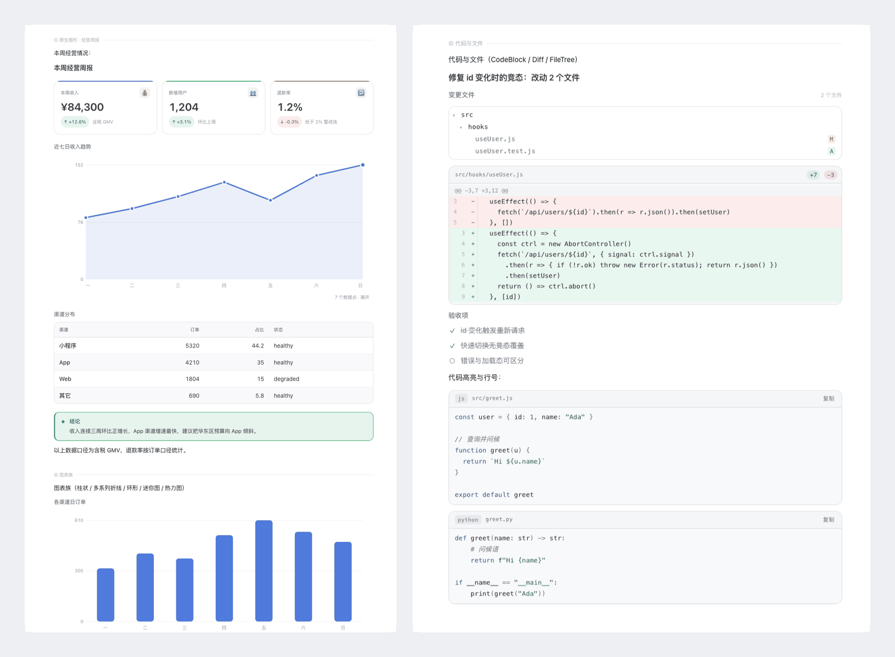

Intelligence UI for DeepSeek Harness
Chat replies that render as interfaces, not walls of Markdown. Native OpenUI fences become cards, tables, charts and diagrams; structured Markdown is compiled into the same visual language; plain text stays plain text.

Install
Clone the repository and install its directory as a plugin bundle in DeepSeek Harness. See the quickstart.
44 components
Metrics, tables, timelines, steps, charts, a schematic map, code/diff/file panels, trees and interactive controls — all theme-native and light/dark aware.
Safe by construction
A bad program never breaks the message; invalid input degrades to a local notice or plain text. No analytics, no telemetry, no network requests.